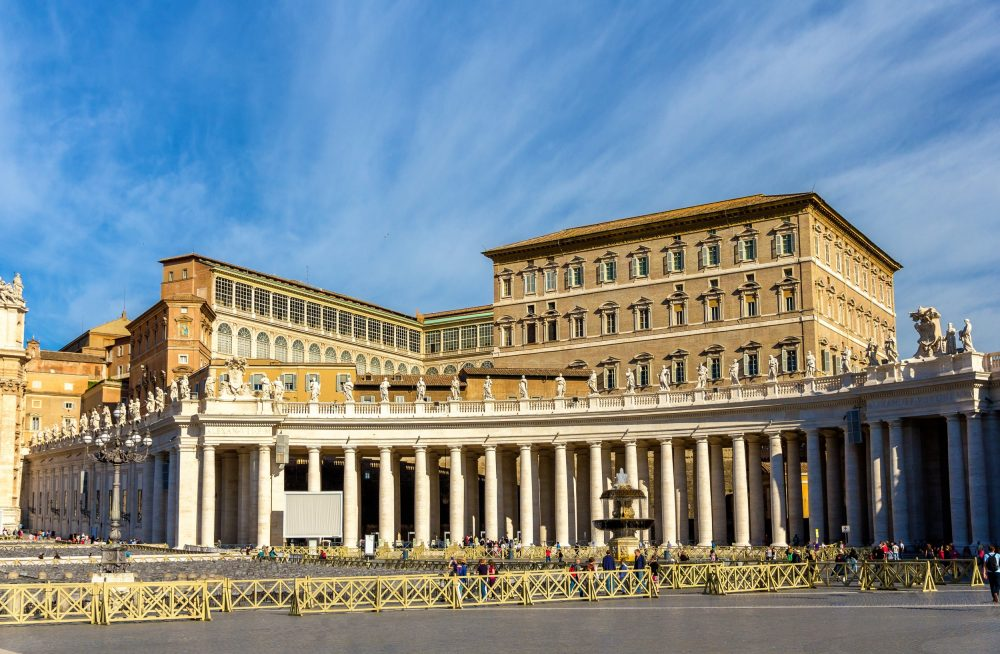
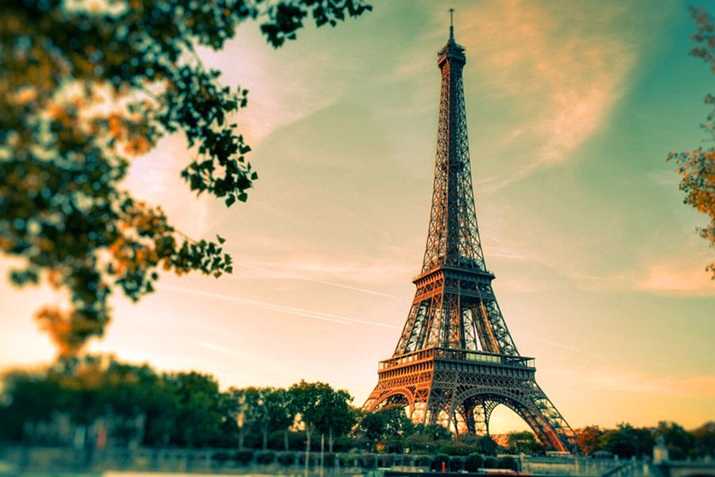
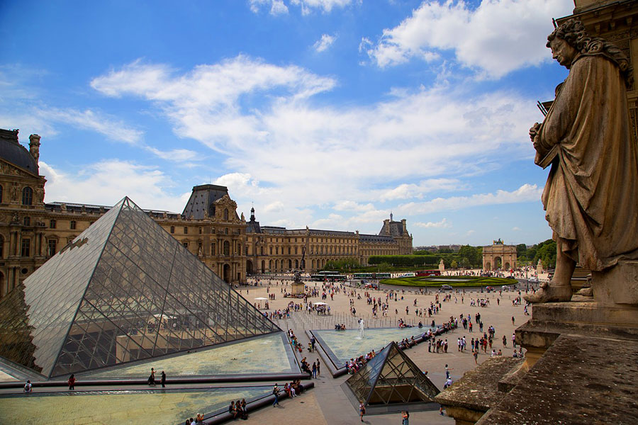
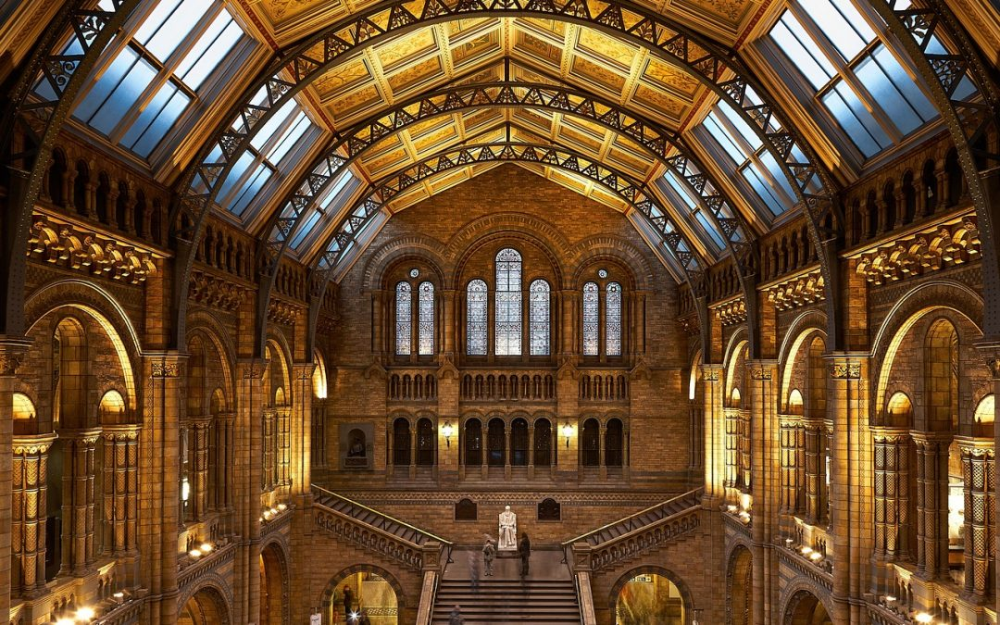
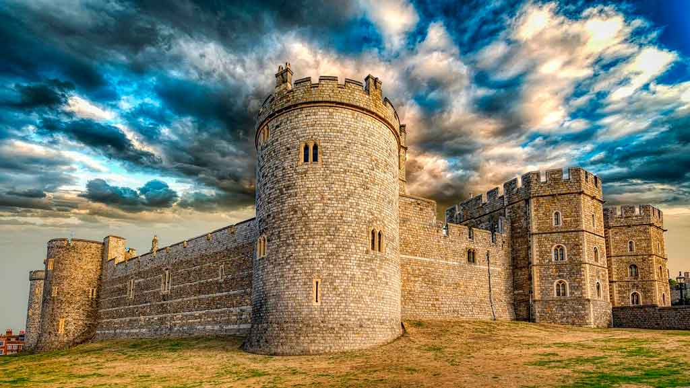

Pontos turísticos da Europa para conhecer:
os mais incríveis!
ITÁLIA
Nossa viagem hoje começa por alguns lugares da Itália, país que faz parte da Europa
Meridional, conhecido por sua riquíssima culinária, castelos e paisagens naturais que
deixam os turistas de queixo caído.
CAPELA SISTINA, ROMA

Além de ser uma maravilha da arquitetura, o principal motivo da Capela entrar nessa lista,
se dá ao fato da obra que está pintada em seu teto, "A Criação de Adão". Representa um
episódio do livro Gênesis no qual Deus cria o primeiro homem.
Fonte: Fonte: Italian National Tourism Office (ENIT)
COLISEU, ROMA

O Coliseu é o principal símbolo de Roma, uma imponente construção que, com quase 2.000
anos de idade, te fará voltar no tempo para descobrir como era a antiga sociedade do
Império Romano.
Fonte: Tudo sobre roma
FRANÇA
Partindo agora para a França, um ícone da Europa Ocidental e a casa da torre mais famosa
do mundo.
TORRE EIFFEL, PARIS

O principal símbolo da França e dos monumentos mais famosos do mundo é uma estrutura
de ferro construída no coração da capital francesa, pode ser vista de praticamente todos
os lugares da cidade e do alto de seus mais de 160 metros de altura épossível ter uma
visão completa de Paris.
Fonte: Office of Tourism and Congress in Paris
MUSEU DO LOUVRE, PARIS

O museu mais visitado do mundo mantém o número de visitantes constante e acumula ao
longo de sua existência mais de 8,5 milhões de visitas. Lar de duas das mais importantes
obras de arte da história, Venus de Milu e Monalisa, o museu ainda conta com mais de 35
mil obras de arte, além da belíssima pirâmide invertida construída no museu em 1989,
trazendo uma identidade única ao museu.
Fonte: The Art Newspaper
REINO UNIDO
Chegando ao Reino Unido, que também faz parte da Europa Ocidental, encontraremos
museus gigantescos e castelos maiores ainda, maravilhas da arte, história e arquitetura.
MUSEU DE HISTÓRIA NATURAL, LONDRES

Localizada em South Kensington, o Museu de História Natural de Londres é o mais popular
da Europa nessa categoria, tendo em sua coleção mais de 70 milhões de itens, incluindo
espécimes coletados por Charles Darwin e uma imensa área dedicada a pré-história como
vários fósseis e esqueletos de dinossauro.
Fonte: The Association of Leading Visitor Attractions (ALVA)
CASTELO DE WINDSOR, BERKSHIRE

Cenário de importantes episódios históricos do país, com mais de 1.000 anos de história,
o Castelo de Windsor recebe, até hoje, cerimônias oficiais e chefes de Estado de todos
os cantos do mundo.
Fonte: Passagens promo
{kind=link}